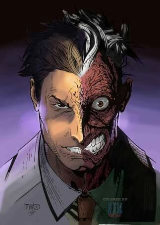

Dos Caras

Dos Caras, también conocido como Harvey Dent, es un villano emblemático de Batman en DC Comics. Anteriormente fue un fiscal de distrito de Gotham City, cuya mitad de la cara quedó desfigurada por ácido durante un juicio. Utiliza una moneda de dos caras para tomar decisiones, basándose en la suerte para determinar sus acciones. Esta dualidad lo convierte en un enemigo impredecible y obsesivo para Batman y sus aliados.